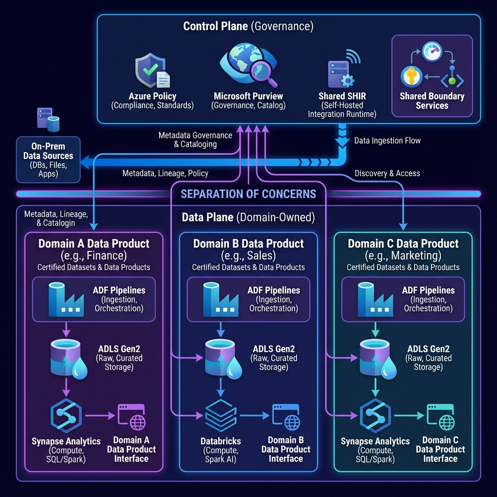
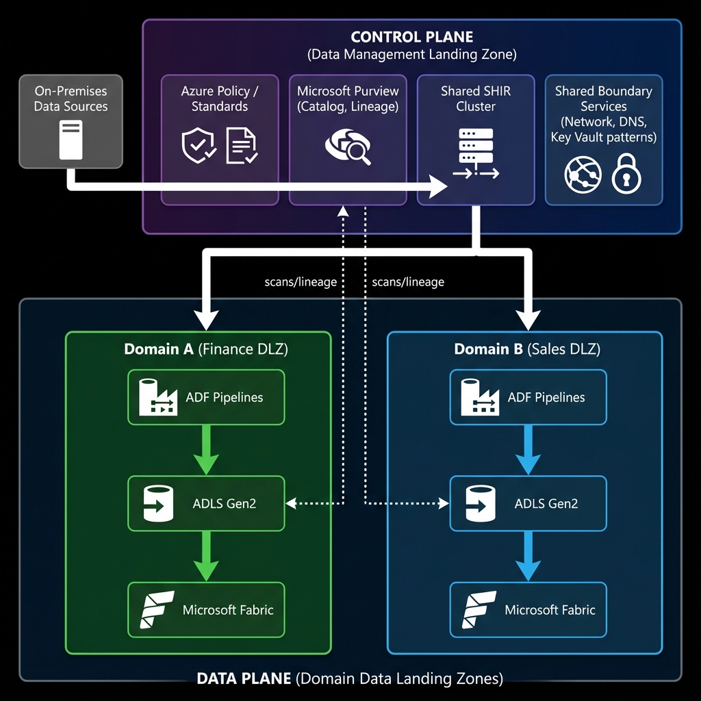

The problem (why "data lakes" turn into swamps)
Most enterprise data platforms fail for boring reasons:
- One central team becomes a bottleneck.
- Every domain copies the same tables "just in case".
- Security becomes a mix of storage keys, shared service principals, and tribal knowledge.
- Costs explode because nobody can see or own their spend.
Data Mesh is a reaction to that. But Data Mesh also fails if you don't provide a strong platform with guardrails.
A Data Landing Zone (DLZ) approach is the practical middle ground. Domains get autonomy to build data products. Central teams keep control of governance, identity, networking, and standards.
Core model (what scales)
Separate your world into:
- Control plane: governance, catalog, security guardrails, shared boundary services.
- Data plane: domain-owned data products, pipelines, storage, and compute.
If you mix these two, you get either:
- a central bottleneck (everything controlled), or
- a free-for-all swamp (no governance).
This control-plane vs data-plane split maps directly to Microsoft's Cloud Scale Analytics (CSA) guidance.
The 6 decisions that prevent platform collapse
1) Subscription boundaries (don't "share one workspace")
Create a repeatable unit of scale:
- 1 Data Management Landing Zone subscription (control plane).
- N Data Landing Zone subscriptions (one per domain, or per group of domains).
This is the simplest way to enforce policy, budgets, RBAC boundaries, and operational ownership.
2) Identity-first access (kill storage keys and "shared admin")
Standardize on Microsoft Entra ID for:
- user access
- pipeline access
- workload-to-workload access
Default pattern:
- Access via Entra groups.
- Use managed identities for services (Data Factory, Microsoft Fabric gateways where applicable, Functions, etc.).
- Treat "Owner" and "Contributor" as exceptional.
3) Networking (private by default, with one DNS strategy)
If you want regulated-grade governance:
- Private endpoints for Storage, Purview, Key Vault, SQL, etc.
- Public network access disabled where possible.
- One DNS strategy that shows how:
- Azure workloads resolve private endpoints
- on-prem resolves private endpoints (resolver + forwarding)
If DNS is inconsistent, the platform becomes "randomly broken" per subnet.
4) Ingestion boundary (shared SHIR, not SHIR everywhere)
On-prem connectivity is where platforms get messy.
A stable pattern:
- Deploy Shared Self-Hosted Integration Runtime (SHIR) as a control-plane capability.
- Make it highly available (scale-out with multiple nodes).
- Patch and monitor it like a tier-0 component.
Avoid per-domain SHIR sprawl. It multiplies patching, incident ownership, firewall rules, and drift.
5) Governance with Purview (catalog or chaos)
Purview is not "nice to have" in Data Mesh. It is the mechanism that prevents duplication, enables discovery, and enforces trust.
Minimum governance bar:
- Data Map scanning for lakes and key sources.
- Lineage where possible (ADF, Power BI integration, and supported tools).
- "Certified datasets" so domains don't publish 5 competing customer tables.
6) Cost ownership (FinOps by subscription, not by apology)
Data Mesh fails when costs are shared and nobody feels the pain.
Set:
- subscription budgets per domain DLZ
- alerts to domain owners
- chargeback or showback rules
This changes behavior fast.
Reference architecture (what the diagram is telling you)
The diagram shows domains (Finance, Sales, Marketing), each owning:
- ingestion (Data Factory pipelines)
- storage (ADLS Gen2)
- compute (Microsoft Fabric)
- a domain-facing interface (data product contract)
The control plane holds:
- policy standards
- Purview catalog + governance
- shared SHIR and shared boundary services
That is "federated governance with centralized guardrails".
Diagram (Azure icons)
Architecture Diagram
What "good" looks like (operating model)
Platform team owns (control plane)
- network patterns (private endpoints + DNS)
- identity patterns (groups, PIM, role design)
- policy guardrails (deny public, allowed regions, tagging)
- shared SHIR lifecycle (patching, monitoring, scaling)
- Purview baseline configuration (collections, scanning patterns, glossary)
Domain team owns (data plane)
- data products (interfaces, SLAs, documentation)
- pipelines and transforms
- Fabric workspace cost control
- data quality checks
- access requests inside their domain boundary
If you cannot clearly write "who owns what", incidents will bounce between teams.
Security and access control (where most teams get it wrong)
RBAC + ACL in ADLS Gen2
Use both, intentionally:
- RBAC for coarse permissions and management actions.
- ACLs for folder-level data access boundaries.
Best practice:
- Grant permissions to Entra groups (not individuals).
- Keep folder hierarchy aligned to domain products.
- Avoid file-level ACL micromanagement.
Private endpoints and public access
If you want to stop data exfiltration:
- private endpoints for storage and key services
- disable public network access where feasible
- ensure DNS resolution is consistent across VNets and on-prem
Managed identities everywhere
Prefer managed identity auth for:
- ADF to Storage
- Purview scans to sources
- Fabric-to-data-source connections where supported
- pipeline-to-service calls
This reduces secrets and rotation overhead.
SHIR reliability (the "hidden single point of failure")
SHIR is a tier-0 dependency if on-prem ingestion matters.
Minimum bar:
- multiple nodes (scale-out capacity)
- avoid putting SHIR on "random" servers that reboot without notice
- monitor node health and queue behavior
- document firewall and proxy requirements once, centrally
If SHIR is unstable, the platform looks unstable.
Practical Checklists
Control plane checklist (platform team)
- [ ] Data Mgmt Landing Zone subscription created
- [ ] Purview baseline: collections model, scanning strategy, glossary baseline
- [ ] Shared SHIR deployed with >= 2 nodes, patched, monitored
- [ ] Private endpoint + DNS pattern documented and reusable
- [ ] Policy baseline applied (deny public PaaS where possible, require tags, restrict regions)
- [ ] Budget + alerting in place for each domain DLZ
Domain onboarding checklist (per DLZ)
- [ ] DLZ subscription created from template
- [ ] ADLS Gen2 created with standardized folder layout (raw/curated/products)
- [ ] Entra groups created (owners, engineers, readers)
- [ ] Data Factory configured with managed identity
- [ ] Fabric workspace created with naming, RBAC, and cost guardrails
- [ ] Purview scan registration completed
- [ ] First data product published with:
- schema/contract
- owner
- SLA expectations
- access request path
Common pitfalls (what breaks first)
- RBAC explosion: too many individual assignments. Fix with group-based access.
- Unscannable lakes: Purview scan fails due to missing permissions or auth mismatch.
- DNS inconsistency: private endpoints resolve in one place and fail elsewhere.
- SHIR sprawl: each team runs their own. Nobody patches. Everyone blames the network.
- Duplicate "gold" tables: no catalog discipline, no certification process.
- Cost drift: Fabric capacity/workspaces scaled without budgets or ownership.
References
Microsoft Learn
- Cloud Scale Analytics
- Cloud Scale Analytics Ready
- Data Management Landing Zone
- Data Landing Zone
- Reference Architecture Overview
- Self-Serve Data Platforms
- Data Domains
- What is Data Mesh
- Purview Data Governance Overview
- Data Map Scan Ingestion
- Register Scan ADLS Gen2
- Integration Runtime Concepts
- Create Self-Hosted Integration Runtime
- Data Factory Service Identity
- Data Lake Storage Access Control
- Data Lake Storage Access Control Model
- Storage Private Endpoints
- Private Endpoint DNS
Microsoft Blogs
- Data Mesh, Data Lakehouse and Azure Cloud Scale Analytics
- Data Mesh with Azure Synapse Analytics
- Track Lineage with Azure Purview
- Classify Data Using Azure Purview
GitHub
YouTube (Microsoft)
- Scalable Data Management and Analytics
- Applying Data Mesh to Your Organization
- Azure Data Landing Zones
- Microsoft Purview Channel